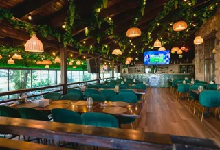
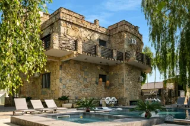
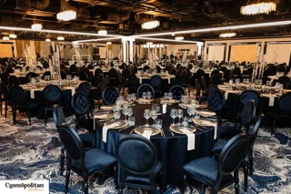
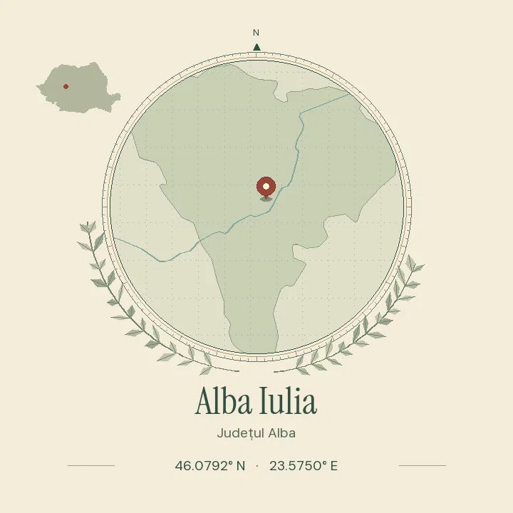
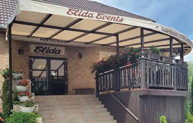
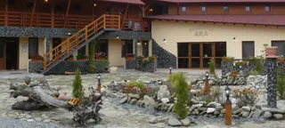
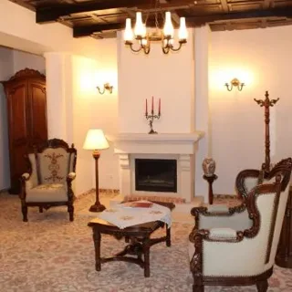
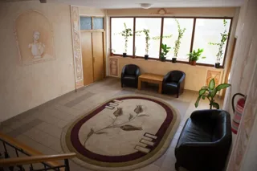
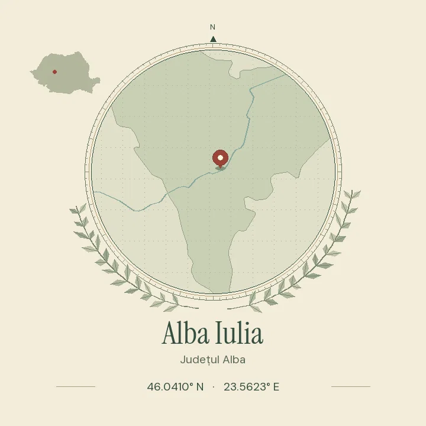
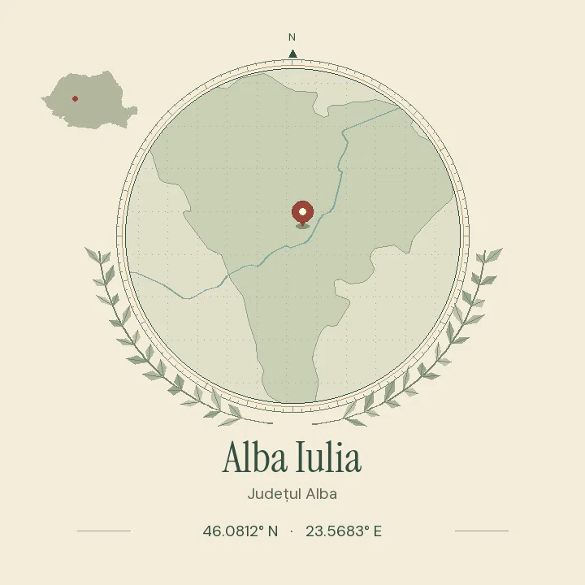

Locații de nuntă în Alba Iulia
- locații în director
- 17
- cu cazare în registrul SITUR
- 6
- medie ponderată Google
- 4,5 / 5
- evaluări Google
- 12.104
Cum alegi o locație în Alba Iulia
În Alba Iulia poți începe comparația cu Pensiunea Element (hotel), Pensiunea Alba Forum (pensiune), Terasa Viilor (restaurant cu specific românesc). Aceste proprietăți apar în primele poziții când luăm în calcul împreună nota și numărul de evaluări Google. Salvează adresele care vă interesează pentru a le așeza apoi alături în fișa de comparare a ofertelor.
În fișele proprietăților poți compara dotări concrete la Pensiunea Element (cazare, parcare gratuită, restaurant), Pensiunea Alba Forum (terasă, cazare, parcare gratuită). Pentru oferta de nuntă, întreabă ce spații și servicii dintre cele prezentate intră în rezervarea privată pentru data voastră.
Dacă vin rude de departe, Pensiunea Element are o unitate de cazare asociată în registrul SITUR. Înregistrarea pentru Element cuprinde 20 de locuri de dormit în 10 spații de cazare. Întreabă câte camere pot fi păstrate pentru aceeași noapte înainte să trimiți invitaților detaliile de rezervare.
Dacă vrei să vezi două proprietăți în aceeași zi, poți continua de la Hanul cu Berze spre Pensiunea Boema din Lancrăm. Punctele lor sunt la 5,4 km în linie dreaptă. Deschide traseul înainte să fixezi ora celei de-a doua vizite, mai ales dacă grupul se deplasează cu autocarul.
Locații pentru vizionare
Ordinea ține cont de nota Google și de numărul evaluărilor. Cum calculăm ordinea

Fotografie a locației · Sursa fotografiei Alba Iulia · Hotel
Pensiunea Element
Pensiunea Element. Un oaspete de la Element își amintește camera modern amenajată, liniștea zonei și varietatea preparatelor de dimineață.
Strada Mircea Eliade 2A, 510001 Alba Iulia+40 745 323 270
Fotografie a locației · Sursa fotografiei Alba Iulia · Pensiune
Pensiunea Alba Forum
Pensiunea Alba Forum, Alba Iulia. A contat combinația dintre liniștea cartierului, apropierea cetății și posibilitatea de a parca.
Strada Brândușei 20A, 510216 Alba Iulia+40 726 182 256
Fotografie a locației · Sursa fotografiei Alba Iulia · Restaurant cu specific românesc
Terasa Viilor
Un vizitator la Terasa Viilor din Alba Iulia își amintește în special cartofii prăjiți pe care îi descrie ca proaspeți și apreciază masa luată pe terasă.
Strada Francisca 4B, 510040 Alba Iulia+40 773 755 007
Fotografie a locației · Sursa fotografiei Alba Iulia · Pensiune
Pensiunea Ave, Alba!
Pensiunea Ave, Alba!, Alba Iulia. Imaginea de cazare arată un pat dublu, o măsuță de toaletă și un fotoliu lângă fereastră.
Bulevardul Horea 27, Alba Iulia+40 358 407 825
Fotografie a locației · Sursa fotografiei Alba Iulia · Castel
Castle Transylvania
Pentru Castle Transylvania există chiar mărturia unor miri care mulțumesc echipei pentru găzduirea nunții și atenția acordată invitaților.
Strada Vlădeasa 4, 510001 Alba Iulia+40 755 576 411
Fotografie a locației · Sursa fotografiei Alba Iulia · Local pentru evenimente
Cosmopolitan Ballroom
Mirii care și-au ținut nunta la Cosmopolitan Ballroom în noiembrie 2025 spun că era ultima nuntă din sezonul echipei.
Strada Tudor Vladimirescu 50A, 510167 Alba Iulia+40 752 347 300
Fotografie a locației · Sursa fotografiei Alba Iulia · Sală de nunți
Mariss Events
Mariss Events. Mirii unei nunți de octombrie de la Mariss povestesc că au ales cu managerul inclusiv meniuri pentru copii și vegetarieni.
Strada Viilor 39, 510154 Alba Iulia+40 742 192 220
Fotografie a locației · Sursa fotografiei Alba Iulia · Sală de nunți
Jolly Events
Mirii care și-au organizat nunta la Jolly Events își amintesc reacțiile invitaților la trei lucruri concrete, sala, masa și servirea.
Strada Livezii 37, 510011 Alba Iulia
Hartă ilustrată Alba Iulia · Restaurant
La Conac
Restaurantul La Conac din Alba Iulia apare într-o relatare despre felul în care personalul a corectat o comandă de cafea rece, fără să ceară o nouă plată.
Strada Decebal 10, Alba Iulia+40 720 042 004
Hartă ilustrată Alba Iulia · Local pentru evenimente
Restaurant Mercur
Restaurant Mercur, Alba Iulia. Un invitat la Mercur spune că, deși sala i s-a părut mare, în timpul dansului oamenii au ajuns și printre mese.
Strada Gheorghe Șincai 7, 510001 Alba Iulia+40 723 696 449
Fotografie a locației · Sursa fotografiei Alba Iulia · Sală de banchete
Elida Events
Elida Events, Alba Iulia. O persoană care a vizitat restaurantul Elida spune că sala i s-a părut potrivită pentru un botez sau o nuntă restrânsă.
Strada Vasile Alecsandri nr. 2, Alba Iulia+40 744 479 772
Fotografie a locației · Sursa fotografiei Alba Iulia · Pensiune
Pensiunea ARA
Pensiunea ARA. O familie care a cerut telefonic cazare la ARA descrie o neînțelegere legată de împărțirea adulților și copiilor în camere diferite.
Strada Drăgășani 15D, 510002 Alba Iulia+40 745 173 747
Fotografie a locației · Sursa fotografiei Alba Iulia · Hotel
Hotel Medieval
Hotel Medieval, Alba Iulia. Un turist descrie dificultăți în a intra prin zona sudică a cetății la ora pe care o aștepta.
Strada Militari 2, 510009 Alba Iulia+40 372 919 965
Fotografie a locației · Sursa fotografiei Alba Iulia · Pensiune
Pensiune Casa Traiana
Pensiune Casa Traiana. La Casa Traiana, un oaspete interesat de cetatea din Alba Iulia a apreciat apropierea și micul dejun ales din meniu, pregătit pe loc.
Strada Arieșului 49A, 510178 Alba Iulia+40 728 444 318
Fotografie a locației · Sursa fotografiei Alba Iulia · Restaurant
Prestige Alba Iulia
Prestige Alba Iulia. De la Prestige, un oaspete estimează aproximativ douăzeci de minute de mers pe jos până la Poarta a III-a a cetății.
Strada Vasile Alecsandri 68A, 510165 Alba Iulia+40 773 396 820
Hartă ilustrată Alba Iulia · Sală de nunți
Hanul cu Berze
La Hanul cu Berze, curtea cu o căsuță de joacă, două tobogane și foișor din lemn poate atrage familiile care vin cu copii la Alba Iulia.
Strada Regimentul V Vânători 83-85, 510158 Alba Iulia+40 747 110 143
Hartă ilustrată Alba Iulia · Bed & Breakfast
Pensiunea Terra
Pensiunea Terra, Alba Iulia. Un oaspete al pensiunii Terra spune că în camera în care a stat a găsit un ventilator și îi lipsea frigiderul.
Bulevardul Republicii 5B, 510077 Alba Iulia+40 744 785 465
Întrebări despre locațiile din Alba Iulia
Unde pot dormi invitații în Alba Iulia?
În registrul de cazare SITUR găsim Pensiunea Element (20 de locuri de cazare), Pensiunea Alba Forum (14 locuri de cazare), Mariss Events (57 de locuri de cazare). Verifică ce camere sunt libere pentru noaptea evenimentului.
Ce proprietăți din Alba Iulia au grădină sau terasă?
Pensiunea Alba Forum (terasă); Terasa Viilor (terasă); Pensiunea ARA (grădină, terasă). Cere administratorului condițiile de folosire pentru o petrecere privată.
Care locație din Alba Iulia are cele mai multe evaluări Google?
La Conac are 4.801 evaluări în profilul Google folosit la documentare. Evaluările acoperă și alte experiențe la proprietate, inclusiv vizitele fără eveniment.
Unde apare o intrare accesibilă în Alba Iulia?
Profilurile Google indică o intrare accesibilă la Terasa Viilor, Cosmopolitan Ballroom, Mariss Events. Pentru o cununie în exterior, cere detalii despre traseul dintre intrare și zona cu scaune.
Vizionări în apropiere
- Lancrăm · 1 locație. Între Hanul cu Berze și Pensiunea Boema sunt 5,4 km în linie dreaptă.
- Sebeș · 3 locații. Între Hanul cu Berze și Rose Events Vințișoara sunt 8,4 km în linie dreaptă.
- Stremț · 1 locație. Între Pensiunea ARA și Pensiunea Colev sunt 15,0 km în linie dreaptă.